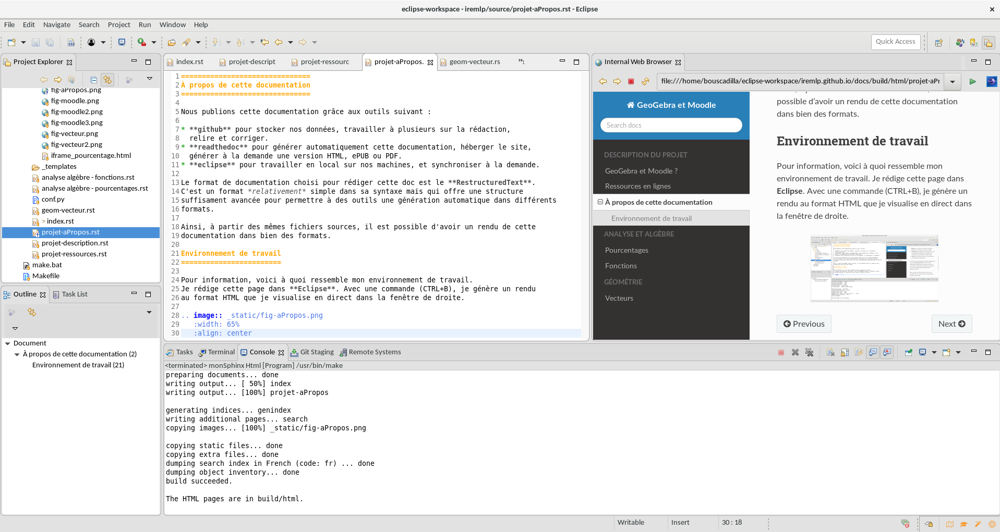

À propos de cette documentation¶
Nous publions cette documentation grâce aux outils suivant :
- github pour stocker nos données, travailler à plusieurs sur la rédaction, relire et corriger.
- readthedoc pour générer automatiquement cette documentation, héberger le site, générer à la demande une version HTML, ePUB ou PDF.
- eclipse ou atom pour travailler en local sur nos machines, et synchroniser à la demande.
Le format de documentation choisi pour rédiger cette doc est le RestructuredText. C’est un format relativement simple dans sa syntaxe mais qui offre une structure suffisament avancée pour permettre à des outils une génération automatique dans différents formats.
Ainsi, à partir des mêmes fichiers sources, il est possible d’avoir un rendu de cette documentation dans bien des formats.
Environnement de travail¶
Pour information, voici à quoi ressemble mon environnement de travail. Je rédige cette page dans Eclipse. Avec une commande (CTRL+B), je génère un rendu au format HTML que je visualise en direct dans la fenêtre de droite.
{kind=link}
C’est plutôt simple [1] et fonctionnel.
- Installer Eclipse
- Dans le Eclipse Marketplace, installer ReST Editor [2]
- Synchroniser le dépot de github avec un dossier de travail dans votre répertoire Workplace
- Configurer Eclipse pour que le rendu se fasse par la commande build all (CTRL + B)
| [1] | Bon, j’avoue que j’ai passé pas mal de temps pour configurer tout ça. |
| [2] | Pour info, c’est la version 1.0.5 chez moi |